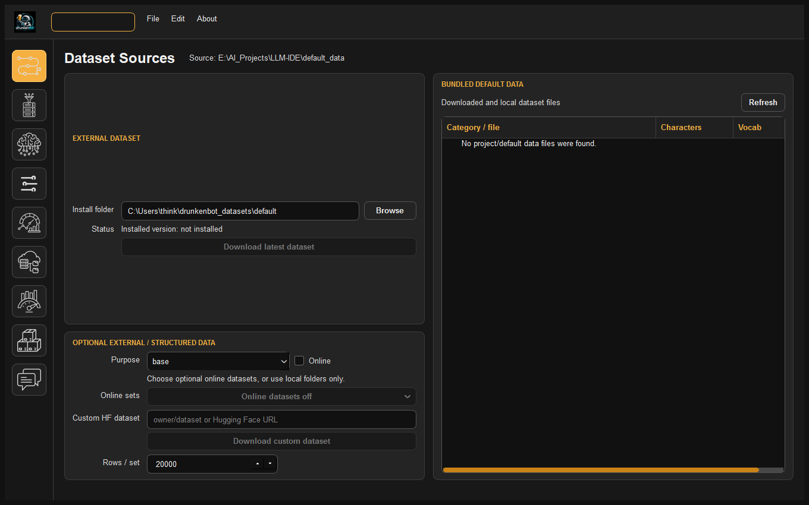
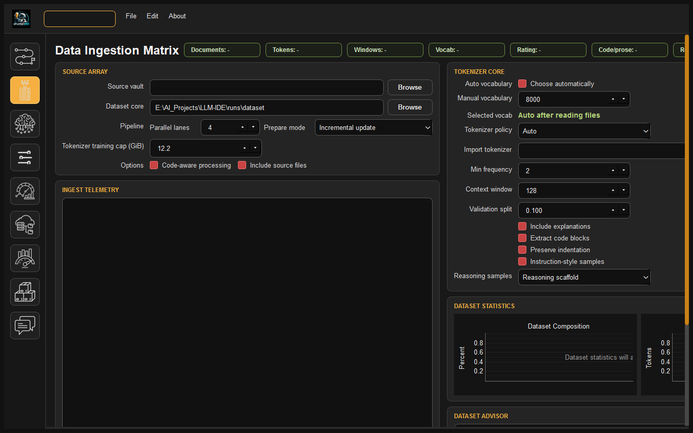
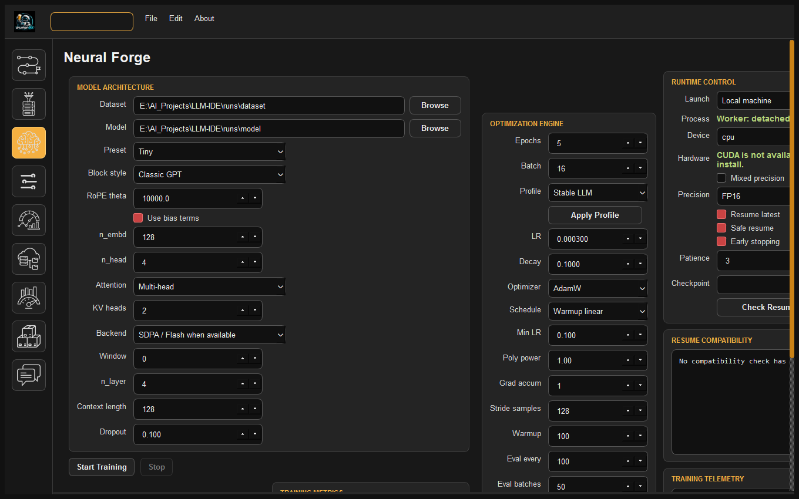
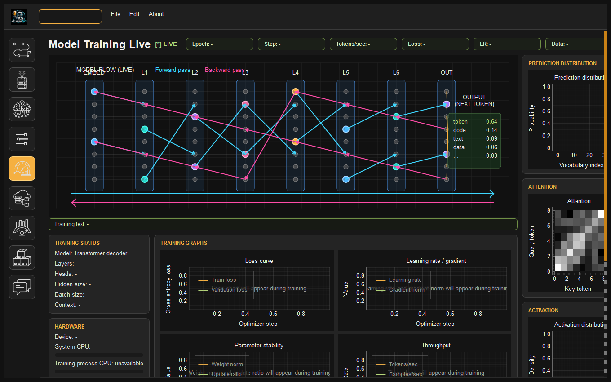
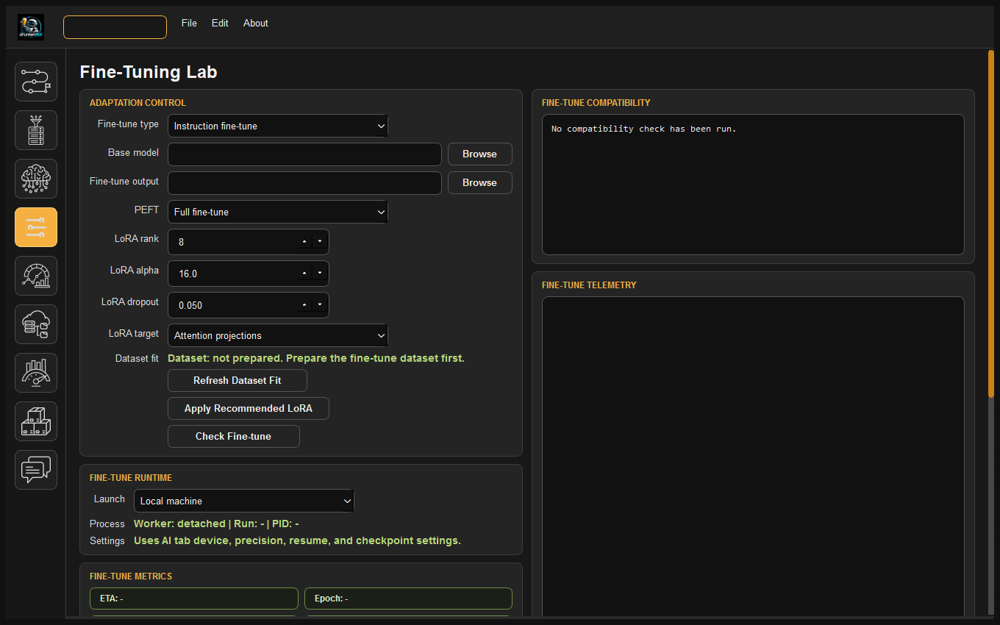
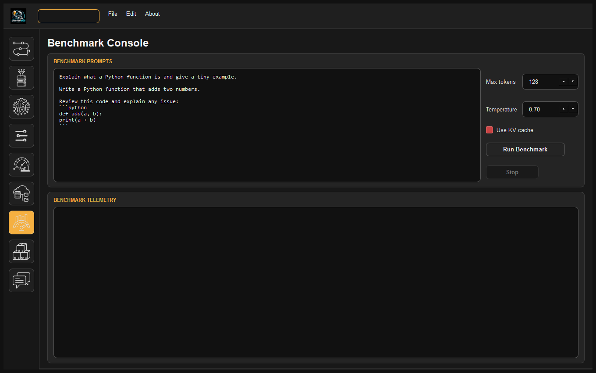
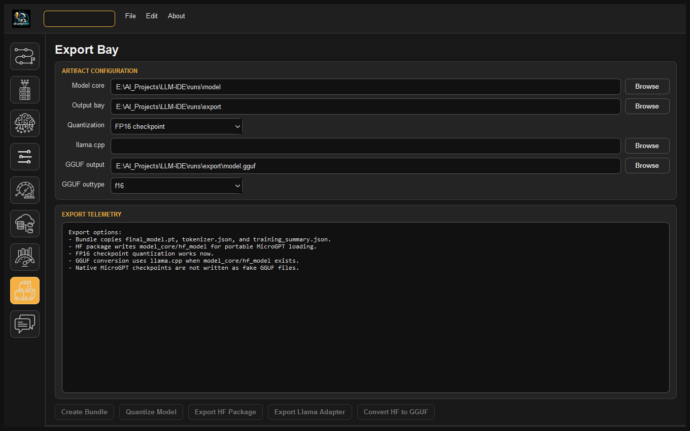
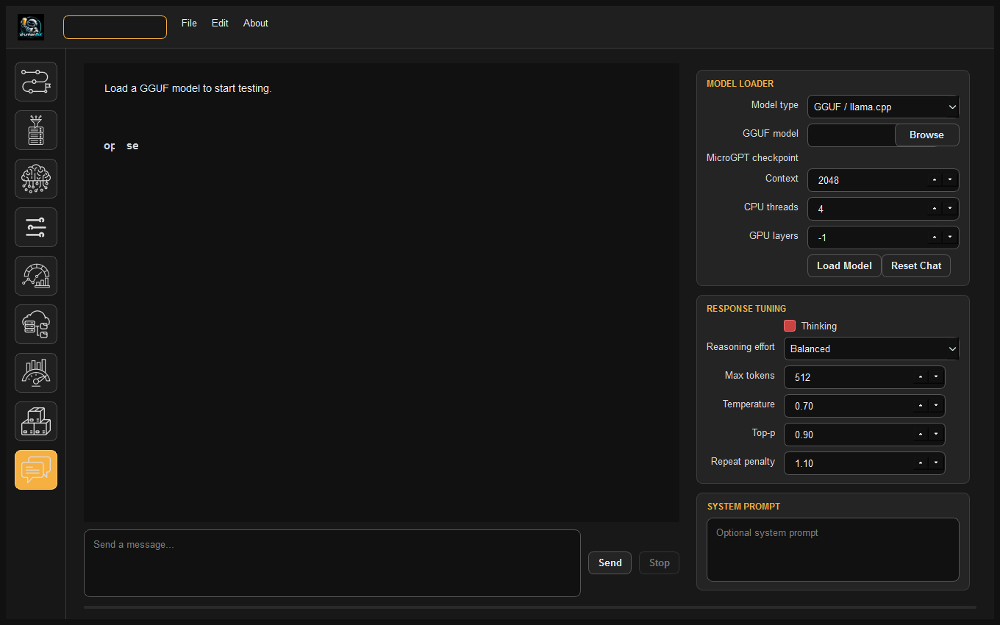

How to Train Your LLM: The Complete Practical Handbook¶
A Step-by-Step Field Guide to Creating, Fine-Tuning, and Deploying Custom Language Models Locally¶
Welcome to Local LLM Development¶
Building a custom Large Language Model (LLM) was once restricted to mega-corporations with multi-million-dollar compute clusters. DrunkenBot LLM-IDE changes that paradigm completely: it allows developers, data scientists, and AI researchers to design, train, align, and quantize proprietary generative language models entirely on their own workstation.
Whether your goal is to build a domain-specialized code assistant, a private medical or legal document synthesizer, or a lightweight conversational companion, this handbook will guide you step-by-step from zero to a fully deployed GGUF model running locally.
Table of Contents¶
- Phase 0: Mental Model & Core Concepts
- Phase 1: Project Setup & Workspace Initialization
- Phase 2: Gathering & Preparing Your Data
- Phase 3: Pretraining Your Base Model From Scratch
- Phase 4: Post-Training Alignment & Fine-Tuning (LoRA & PEFT)
- Phase 5: Benchmarking & Evaluating Performance
- Phase 6: Exporting & Real-World Deployment (GGUF & Chat)
- Phase 7: Troubleshooting & Common Pitfalls
Phase 0: Mental Model & Core Concepts¶
Before launching your first training run, it is vital to understand the multi-stage lifecycle of modern generative models:
flowchart LR
A[Raw Unstructured Data<br/>Books, Code, Docs, Web] -->|Stage 1: Pretraining| B[Base Foundational Model<br/>Predicts next token]
B -->|Stage 2: Instruction / Code Alignment| C[Aligned Task Model<br/>Follows user commands]
C -->|Stage 3: Conversation / Tool Fine-Tune| D[Assistant / Agent Model<br/>Multi-turn dialogue & JSON tools]
D -->|Stage 4: Quantization & Export| E[Deployment Artifact<br/>GGUF Q4_K_M / Ollama]1. Tokens vs. Words¶
Neural networks do not process raw text or strings directly. Text is converted into integers ("token IDs") via a Byte-Pair Encoding (BPE) Tokenizer.
- \(1 \text{ token} \approx 0.75 \text{ English words}\) (or roughly \(3.5\) to \(4\) characters).
- For programming code, tokens represent keywords (def, class, import), indentation blocks, or punctuation operators (->, ::, !=).
2. Context Length¶
The context length (e.g. 512, 1024, 2048, or 4096 tokens) represents the model's instantaneous working memory. - Memory consumption in standard self-attention scales quadratically (\(\mathcal{O}(N^2)\)) with context length. - Double the context length quadruples attention memory requirements. Keep context lengths reasonable (512–1024 for small models; 2048–4096 for larger models).
3. Training Loss vs. Validation Loss¶
- Training Loss: How well the model predicts the next token on the data it is actively studying.
- Validation Loss: How well the model predicts tokens on unseen test documents held in reserve.
- Ideal Curve: Both curves decrease smoothly in tandem.
- Overfitting: Training loss drops very low (e.g. \(< 1.0\)), but validation loss starts rising. The model has memorized the training text rather than learning underlying concepts.
Phase 1: Project Setup & Workspace Initialization¶
DrunkenBot LLM-IDE uses a project-based workspace where all raw data, tokenizers, checkpoints, telemetry logs, and exported binaries are self-contained.
graph TD
PRJ[My_Custom_LLM_Project/] --> CFG[project.json<br/>Saved paths & hyperparameters]
PRJ --> DATA[training_data/<br/>Raw user documents & corpora]
PRJ --> DS[datasets/<br/>train_tokens.npy, val_tokens.npy, tokenizer.json]
PRJ --> MDL[models/<br/>PyTorch checkpoints & checkpoints_step_XXXX.pt]
PRJ --> EXP[exports/<br/>GGUF models, SafeTensors, HuggingFace packages]
PRJ --> RUNS[runs/<br/>SQLite telemetry database: telemetry.db]Step-by-Step Setup:¶
- Launch DrunkenBot LLM-IDE:
- The startup splash screen validates your installation. When the Project Chooser dialog appears:
- Click New Project.
- Enter a human-readable project name (e.g.
CodeForge-350MorLegalBot-45M). - Select a destination folder on your fastest SSD.
- Click Save Project (or press
Ctrl+S). The IDE automatically creates the directory hierarchy shown above.
Phase 2: Gathering & Preparing Your Data¶
Data quality is the single most important factor determining model intelligence. High-quality, clean data always outperforms massive, noisy data.
1. Preparing Datasets by Stage¶
| Dataset Kind | File Format | Format Structure | Primary Purpose |
|---|---|---|---|
| Base Pretraining | .txt, .md, .pdf |
Freeform text, technical documentation, books | Teaches grammar, reasoning, vocabulary, and syntax. |
| Instruction | .jsonl |
{"instruction": "...", "input": "...", "output": "..."} |
Teaches prompt-following and task execution. |
| Conversation | .jsonl |
{"messages": [{"role": "system", ...}, {"role": "user", ...}, {"role": "assistant", ...}]} |
Teaches multi-turn dialogue, tone, and character. |
| Code | .jsonl / .py / .cpp |
Preserved indentation with docstrings & solutions | Teaches code generation, refactoring, and debugging. |
| Tool-Call | .jsonl |
Functions schema with structured JSON arguments | Teaches tool invocation and API orchestration. |
2. Using the Dataset Blueprint Tab (IN)¶

- Navigate to Dataset Blueprint (the first icon in the left navigation sidebar).
- Copy your raw files into
your_project/training_data/or click Browse to point to an external directory. - Review the categorized document tree:
- The blueprint calculates estimated token counts, character volume, and vocabulary density.
- You can uncheck categories or documents you wish to exclude.
3. Ingestion & Tokenizer Configuration¶

- Click the Ingestion icon (second icon in the sidebar).
- Configure your Tokenizer settings:
- Vocabulary Size:
- Small domain models (15M–45M):
4,096to8,192tokens. - General or Code models (120M–350M):
16,384to32,000tokens.
- Small domain models (15M–45M):
- Context Length: Select your target sequence window (e.g.
512,1024, or2048). - Validation Split Ratio: Default
0.05(5% held out for unbiased validation loss). - Prompt Loss Masking: Ensure prompt loss masking is enabled if building instruction, dialogue, code, or tool-calling sets. The engine automatically marks prompt spans with
-100(IGNORE_INDEX). - Click Build Dataset. The engine will train the BPE tokenizer and compile binary memory maps:
train_tokens.npyval_tokens.npytrain_targets.npy(with masked prompts)val_targets.npy
Phase 3: Pretraining Your Base Model From Scratch¶
Once your dataset is compiled, navigate to the Neural Forge tab (third icon in the sidebar).

1. Selecting Model Architectural Dimensions¶
Choose an architecture preset that fits your hardware:
graph TD
subgraph Compute_Selection ["Hardware Selection Guide"]
G1["CPU or 4GB VRAM GPU"] --> P1["Preset: Tiny (~15M params)<br/>4 layers, 4 heads, n_embd=256, ctx=512"]
G2["6GB - 8GB GPU (e.g. RTX 3060/4060)"] --> P2["Preset: Small (~45M params)<br/>6 layers, 8 heads, n_embd=512, ctx=1024"]
G3["8GB - 12GB GPU (e.g. RTX 3080/4070)"] --> P3["Preset: Medium (~125M params)<br/>12 layers, 12 heads, n_embd=768, ctx=2048"]
G4["16GB - 24GB GPU (e.g. RTX 3090/4090)"] --> P4["Preset: Base (~350M params)<br/>24 layers, 16 heads, n_embd=1024, ctx=2048"]
end2. Hyperparameter Configuration¶
- Block Style: Modern LLaMA-style (RMSNorm + SwiGLU) is strongly recommended over Classic GPT.
- RoPE Base Theta: Set to
10000.0for short context (\(\le 2048\)) or50000.0for long context (\(4096+\)). - Learning Rate:
- Tiny/Small:
5e-4(\(0.0005\)) - Medium/Base:
3e-4(\(0.0003\)) - Learning Rate Schedule:
Warmup Linearwith \(500\) to \(1,000\) warmup steps. - Weight Decay:
0.1(AdamW decoupled weight decay prevents weight explosion). - Precision: Set to Mixed Precision (AMP FP16) for \(2\times\) faster training and \(50\%\) VRAM reduction.
3. Launching Training & Live Monitoring¶
Click Start Training. The IDE starts a detached background worker process.
Navigate to the Live Telemetry tab (fifth icon):

- Training Curve: Watch the gold/blue loss curve. Good pretraining typically begins at loss \(\approx 10.0\) and converges down toward \(2.5\) – \(1.8\).
- Validation Loss: Checked automatically every 100 steps. As long as validation loss decreases alongside training loss, the model is acquiring generalized intelligence.
- Safety: You can safely close the IDE window! The worker keeps computing. When you reopen the IDE, it reattaches automatically.
Phase 4: Post-Training Alignment & Fine-Tuning (LoRA & PEFT)¶
Once pretraining finishes (or if adapting an existing base checkpoint), open the Fine-Tuning Lab (fourth icon).

1. Choosing Your Adaptation Kind¶
- Instruction Fine-Tuning: Teaches the model to act upon commands and answer direct questions.
- Conversation Fine-Tuning: Trains multi-turn dialogue capability with pinned system prompts.
- Code Fine-Tuning: Trains the model on programming syntax, functions, and docstrings.
- Tool-Call Fine-Tuning: Trains the model to emit JSON schemas for external API calling.
2. Full Fine-Tuning vs. LoRA¶
| Feature | Full Fine-Tuning | LoRA (Low-Rank Adaptation) |
|---|---|---|
| VRAM Usage | High (\(3\times\) model weight memory) | Very Low (\(\approx 20\%\) extra memory) |
| Speed | Standard | \(2\times\) faster backpropagation |
| Catastrophic Forgetting | Risk of degrading base knowledge | Base weights are frozen; zero degradation |
| Recommended When | Training small models (\(< 50\text{M}\)) | Training larger models (\(> 100\text{M}\)) or code |
3. LoRA Configuration Rules of Thumb¶
- LoRA Rank (\(r\)):
16is ideal for general instruction;32for complex code. - LoRA Alpha (\(\alpha\)): Set to \(2 \times r\) (e.g. rank
16\(\rightarrow\) alpha32.0). - LoRA Target Modules:
- For standard conversation: Attention projections (
q, k, v, out). - For code & tool calling: Attention + MLP (
w1, w2, c_fc, c_proj). Code logic requires MLP representational capacity! - Click Apply Recommended LoRA to automatically configure optimal settings for your selected task.
Phase 5: Benchmarking & Evaluating Performance¶
Before deploying, benchmark your checkpoint to evaluate perplexity, latency, and response quality.

- Open the Benchmarks tab (seventh icon).
- Select your checkpoint from
models/. - Select your benchmark suite:
- Reasoning: Multi-step logic puzzles and math problems.
- Coding: Algorithm implementations, syntax completion, docstrings.
- General Knowledge: Factual recall and summarization.
- Click Run Benchmark. The benchmark engine reports:
- Perplexity: Lower is better (\(\le 12.0\) represents strong comprehension).
- Inference Speed: Tokens per second generated on host hardware.
- Output Fidelity: Side-by-side prompt responses across training checkpoints.
Phase 6: Exporting & Real-World Deployment (GGUF & Chat)¶
1. Exporting Your Model in the Export Bay¶

- Open the Export Bay tab (eighth icon).
- Choose your target distribution format:
- HuggingFace Transformers: Exports
model.safetensorsandconfig.jsonfor deployment with HuggingFace Hub, vLLM, or TGI. - Quantized FP16: Halves file size while retaining native PyTorch compatibility.
- GGUF Conversion: Compiles directly into quantized GGUF format for
llama.cpp. - Select your GGUF Quantization type:
f16: Unquantized full precision (fastest on high-end GPUs with ample VRAM).q8_0: 8-bit integer quantization (indistinguishable quality from FP16, \(50\%\) smaller).q4_k_m: 4-bit medium k-quantization (the industry standard for consumer desktop and laptop deployment).- Click Convert to GGUF. The compiled binary is saved in your project's
exports/folder.
2. Testing in the Built-in Chat Studio¶

- Open the Chat Studio (ninth icon).
- Select Model type:
GGUF / llama.cpp. - Click Browse and select your newly exported
.gguffile. - Set GPU layers:
-1to offload all transformer layers to your graphics card.- Or set to a specific layer count (e.g.
12) for hybrid CPU/GPU memory sharing. - Configure response samplers:
- Temperature:
0.7for balanced creativity;0.2for deterministic code/math. - Top-p:
0.9(nucleus sampling). - Repeat Penalty:
1.1(prevents repetitive phrase loops). - Reasoning Effort: Select
Light,Balanced, orDeepif testing models trained with chain-of-thought tokens. - Click Load Model and start chatting with your custom local LLM!
3. Deploying in External Ecosystems (Ollama & LM Studio)¶
Deploy to Ollama¶
Create a file named Modelfile:
FROM ./exports/model.gguf
PARAMETER temperature 0.7
PARAMETER top_p 0.9
SYSTEM "You are an intelligent, expert AI assistant trained with DrunkenBot LLM-IDE."
Deploy to LM Studio¶
- Open LM Studio.
- Drag and drop your
.gguffile into theModelsfolder. - Start local inference or expose an OpenAI-compatible HTTP REST endpoint at
localhost:1234.
Phase 7: Troubleshooting & Common Pitfalls¶
1. Training Loss is NaN or Suddenly Explodes to Infinity¶
- Cause: Learning rate is too high, or mixed-precision gradient scaling underflowed.
- Fix:
- Reduce learning rate by half (e.g. from
5e-4to2.5e-4). - Increase warmup steps from
100to500. - Ensure gradient clipping is active (
max_grad_norm = 1.0).
2. CUDA Out of Memory (OOM) Error¶
- Cause: The model size, batch size, or context length exceeded your GPU's physical VRAM.
- Fix:
- Reduce Batch Size to
4or2, and increase Gradient Accumulation to maintain the same effective batch size. - Shorten context length (e.g. from 2048 to 1024).
- Use LoRA instead of Full Fine-Tuning.
3. The Model Repeats the Same Sentence in an Infinite Loop¶
- Cause: Under-trained base model, lack of diversity in training data, or repeat penalty too low.
- Fix:
- Increase Repeat Penalty in the Chat tab to
1.15or1.20. - Ensure training loss reached \(\le 2.5\) before conversational fine-tuning.
4. Overfitting: Training Loss Drops to 0.1, but Validation Loss Increases¶
- Cause: Dataset is too small or repetitive for the chosen model size; the model memorized the text.
- Fix:
- Increase Dropout (e.g. from
0.0to0.1). - Increase Weight Decay to
0.1. - Add more diverse text to your training corpus in the Blueprint tab.
5. Generated Code Has Broken Indentation¶
- Cause: Dataset was prepared in general text mode, which collapsed spaces.
- Fix:
- Ensure the dataset stage was set to
Codein the Ingestion tab. - The engine's
clean_codepipeline preserves indentation, tabs, and newlines. Re-run dataset preparation with code mode enabled.
Summary of the Ideal LLM Journey¶
[Gather Data] ──> [Ingest with Target Masking] ──> [Pretrain Base Model]
│
▼
[Deploy to Chat / Ollama] <── [Export to GGUF] <── [LoRA Fine-Tune (Code/Chat)]
Congratulations! You are now equipped with the complete technical knowledge and workflows to train, adapt, and deploy your own custom language models locally with DrunkenBot LLM-IDE.